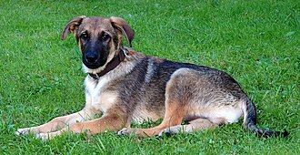
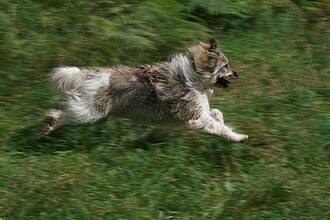

Koira on ihmisen kesyttämä eläin. Alkuaikoina siitä on ollut hyötyä vahtina ja jätteensyöjänä. Koiria käytetään myös metsästyksessä. Monet ihmiset pitävät koiria lemmikkeinä ja se on toiseksi yleisin kotieläin kissan jälkeen, mutta Suomessa tämä on päinvastoin ja koiria on enemmän kuin kissoja lemmikkeinä. Koiria on eri kokoisia ja jokainen voi löytää itsellensä sopivan.
Koira Lemmikkinä
Koiraa pidetään ihmisen parhaana ystävänä ja sen tärkein tehtävä nykyään on olla ihmisen seuralaisena. Se tuo omistajalleen iloa ja koirien on myös todettu vähentävän omistajansa stressiä ja verenpainetta.
Koiran Hoitaminen
Koiran hoitoon liittyy monia eri asioita. Sitä pitää ruokkia ja ulkoiluttaa. Koira tulisi myös pestä hyvin väliajoin. Pitää myös varoa ettei koira karkaa sillä karannutta koiraa on vaikea saada kiinni.

